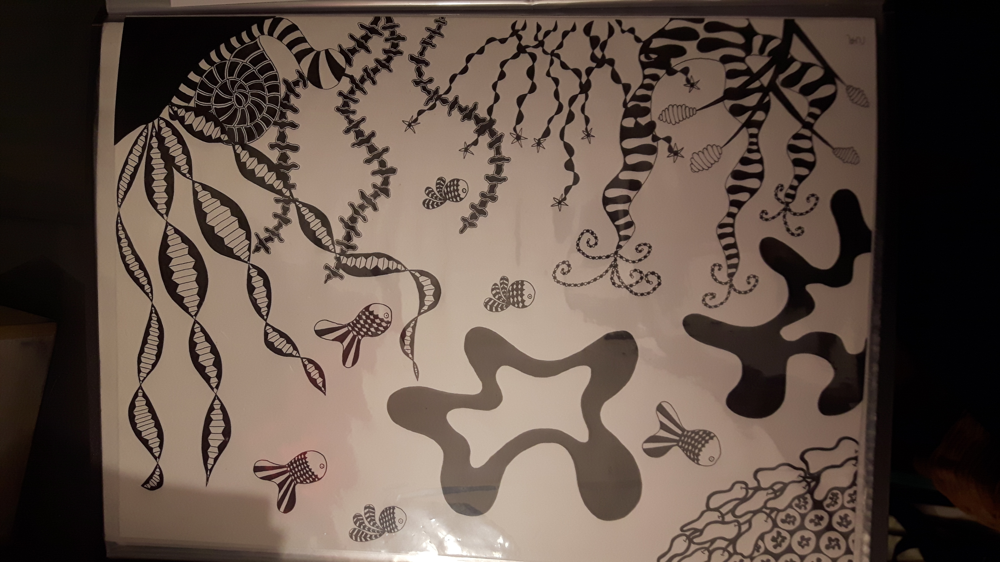

Mijn art
Op deze pagina laat ik jullie mijn creatieve creaties zien.
Op deze pagina laat ik jullie mijn creatieve creaties zien.

Een van mijn favoriete hobby's is tekenen.
Graag teken ik zwart/wit abstracte onderwater landschappen.
 Heerlijk, even verstand op nul en lekker diamantjes leggen.
Heerlijk, even verstand op nul en lekker diamantjes leggen.
Het is een enorm karwei, maar echt de moeite waard als de painting klaar is.